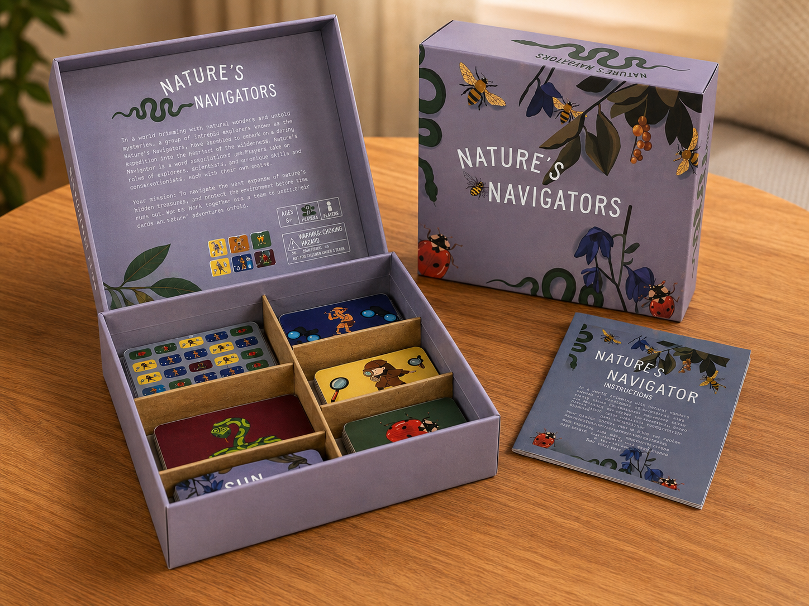
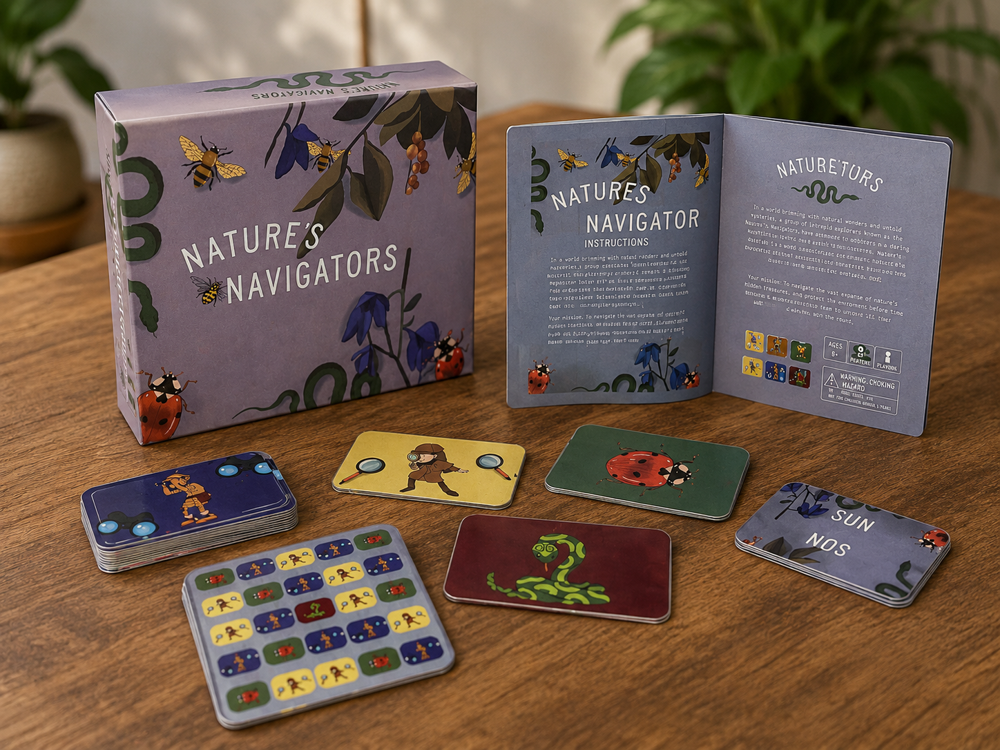
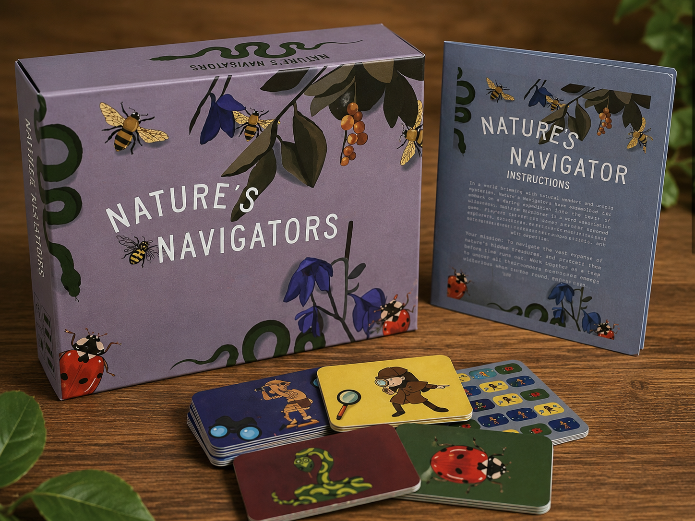
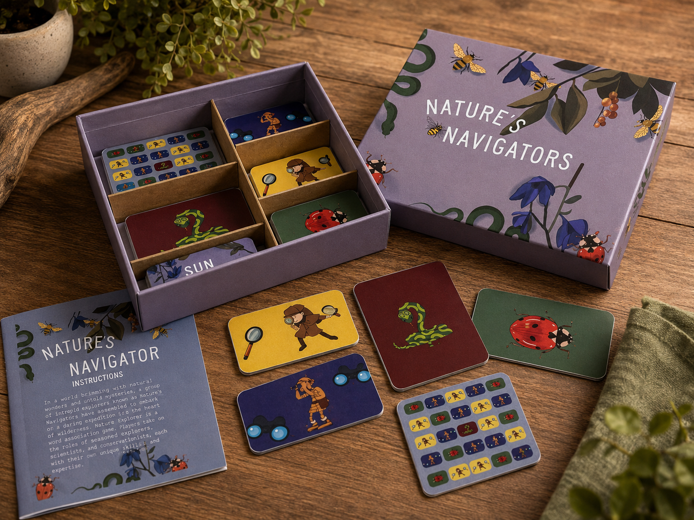
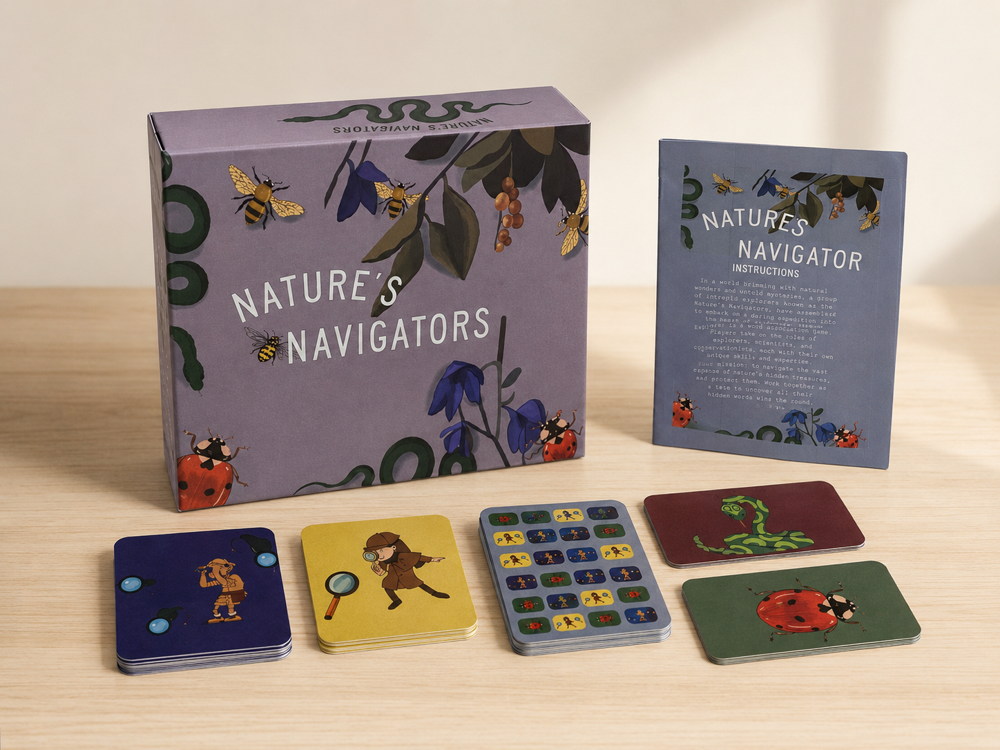
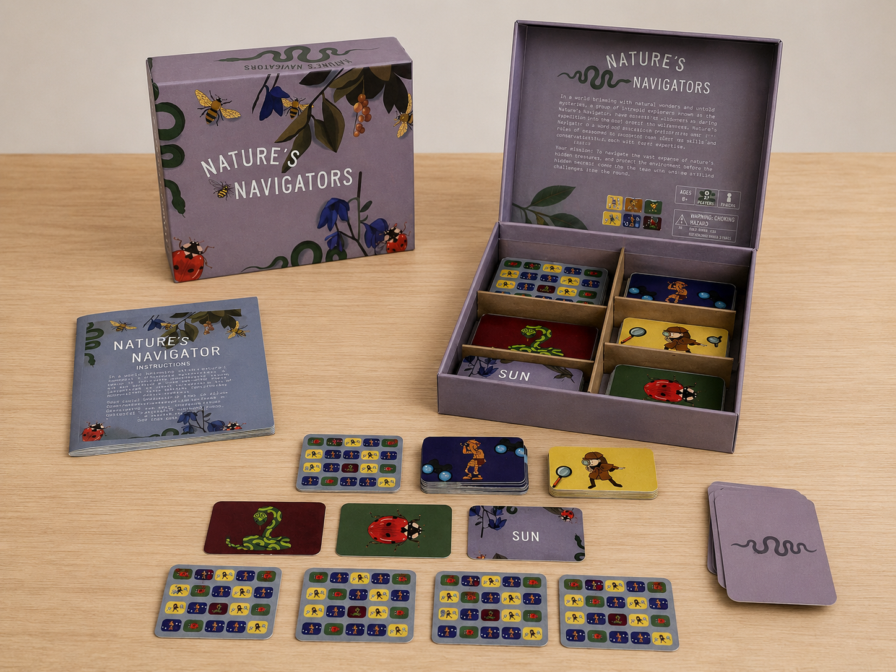
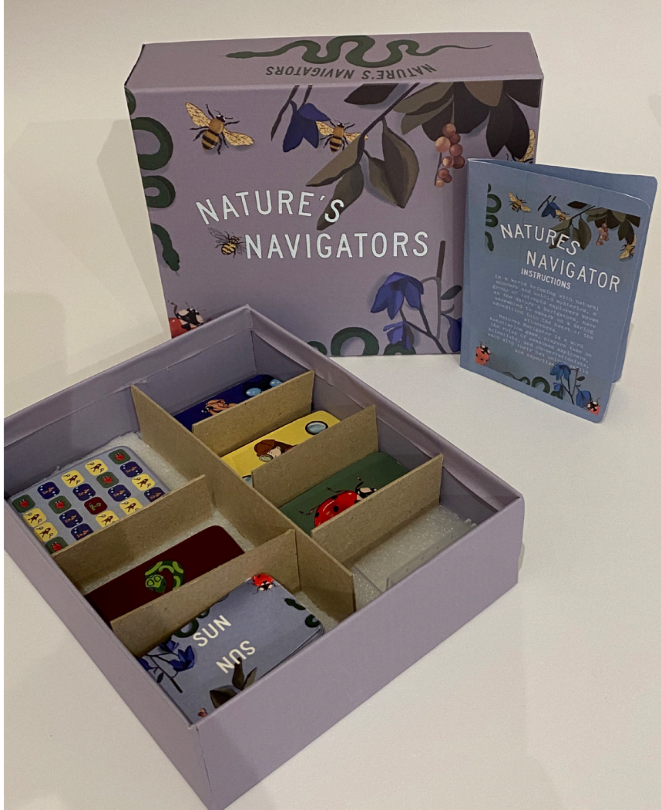
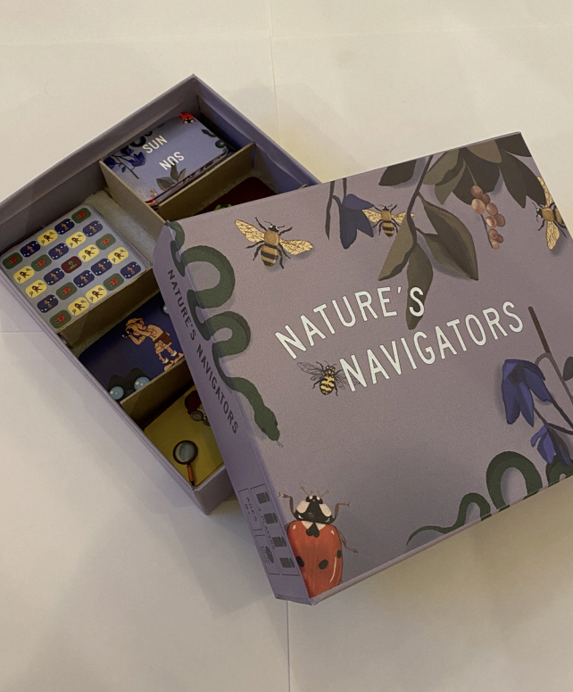
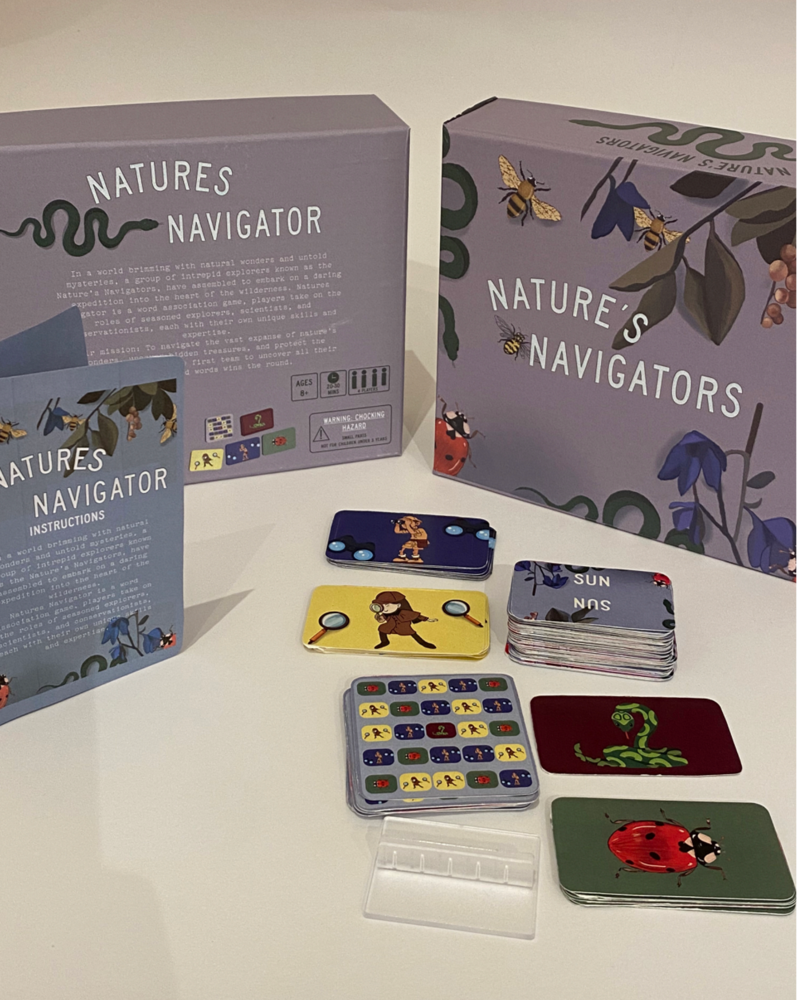
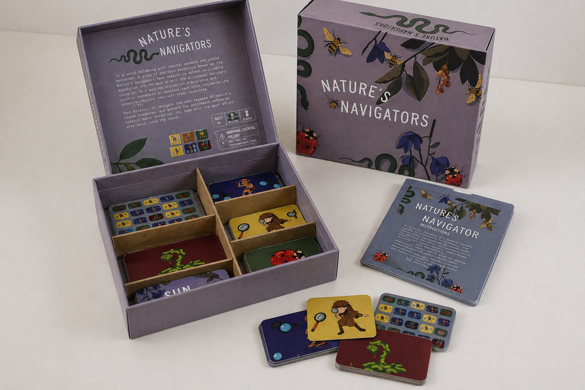

Nature's Navigators
Nature's Navigators turns the natural world into a playful board game experience, encouraging young players to explore, observe and work together. The system combines packaging, cards, instructions and character-based visuals into an immersive tabletop world.










- Game Design
- Packaging Design
- Illustration
- Art Direction
- Game box and internal packaging
- Character, creature and grid card decks
- Instruction booklet
- Full tabletop mockup
2024
Design a visually engaging board game that teaches players about nature and exploration through illustration, storytelling and interactive play.
Players become curious explorers moving through the natural world. Through cards, clues and character roles, the game encourages children to notice details, solve challenges and connect with plants, insects and animals in a playful way.
Whimsical, earthy and illustrative. A soft purple base creates a distinctive identity, while bees, ladybirds, snakes, leaves and flowers build a rich nature-inspired world. The hand-drawn visual style gives the game personality and warmth, while a structured card system keeps it functional and easy to understand.
Children, families and classrooms looking for nature-focused, play-based learning.